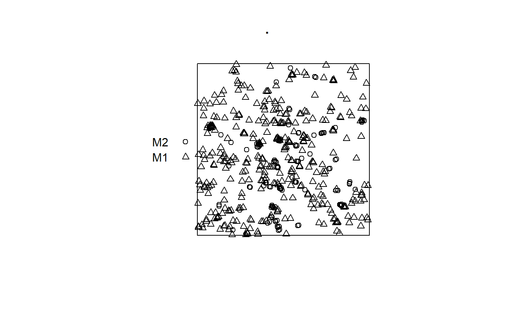
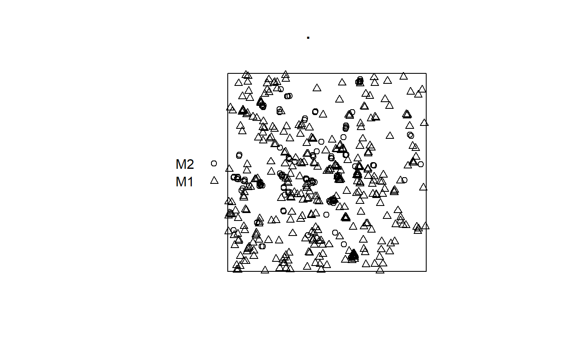
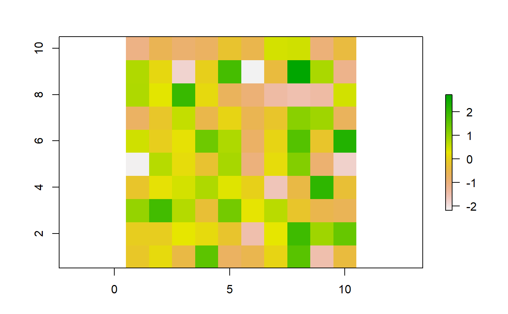

st_coordinates_tidy.Rdfunctions ot extract coordinates from a point geometry, convert a sf to ppp and create a raster
st_coordinates_tidy(sf_object) sf_as_ppp(sf_geometry_input, sf_polygon_boundary) tibble_as_raster(data)
| sf_object | sf_object input |
|---|---|
| sf_geometry_input | input sf of points |
| sf_polygon_boundary | input sf of box or boundary |
| data | tibble with three column names: x, y, z (for longitud, latitud, and grid value) |
sf and data.frame object X and Y extracted from geometry column
st_coordinates_tidy: retrieve coordinates within the original sf/data.frame object. an alternative from st_coordinates()
sf_as_ppp: integrates point geometry dataset and a boundary to create a ppp for spatstat analysis. more
tibble_as_raster: transform a x,y,z tibble to a raster
#>library(avallecam) sites <- tibble(gpx_point = c("a","b"), longitude = c(-80.144005, -80.109), latitude = c(26.479005,26.83)) %>% print()#> # A tibble: 2 x 3 #> gpx_point longitude latitude #> <chr> <dbl> <dbl> #> 1 a -80.1 26.5 #> 2 b -80.1 26.8sites_sf <- sites %>% st_as_sf(coords = c("longitude", "latitude"), remove = T, crs = 4326) %>% print()#> Simple feature collection with 2 features and 1 field #> geometry type: POINT #> dimension: XY #> bbox: xmin: -80.14401 ymin: 26.479 xmax: -80.109 ymax: 26.83 #> epsg (SRID): 4326 #> proj4string: +proj=longlat +datum=WGS84 +no_defs #> # A tibble: 2 x 2 #> gpx_point geometry #> <chr> <POINT [°]> #> 1 a (-80.14401 26.47901) #> 2 b (-80.109 26.83)#> X Y #> 1 -80.14401 26.47901 #> 2 -80.10900 26.83000# our proposal sites_sf %>% st_coordinates_tidy()#>#> Simple feature collection with 2 features and 3 fields #> geometry type: POINT #> dimension: XY #> bbox: xmin: -80.14401 ymin: 26.479 xmax: -80.109 ymax: 26.83 #> epsg (SRID): 4326 #> proj4string: +proj=longlat +datum=WGS84 +no_defs #> # A tibble: 2 x 4 #> gpx_point X Y geometry #> <chr> <dbl> <dbl> <POINT [°]> #> 1 a -80.1 26.5 (-80.14401 26.47901) #> 2 b -80.1 26.8 (-80.109 26.83)# sf_to_ppp ------------------------------------------ # data packages library(tidyverse) library(avallecam) library(maptools)#>#>#>#>#> #>#> #> #>#>#> #> #>#> #>#> #>#> #> #># reverse engineering # extract window from ppp flu_one_window <- st_as_sf(flu_one) %>% filter(label=="window") %>% pull(geom) # extract points from ppp flu_one_points <- flu_one %>% as_tibble() %>% #tibble to sf st_as_sf(coords = c("y", "x"), remove = T, crs = 4326, agr = "constant") # re-create a ppp from points and bbox sf_as_ppp(sf_geometry_input = flu_one_points, sf_polygon_boundary = flu_one_window) %>% plot()# tibble_as_raster ------------------------------------- set.seed(33) expand_grid(x=1:10, y=1:10) %>% mutate(z=rnorm(100)) %>% # convert tibble to raster tibble_as_raster() %>% # plot to verify plot()